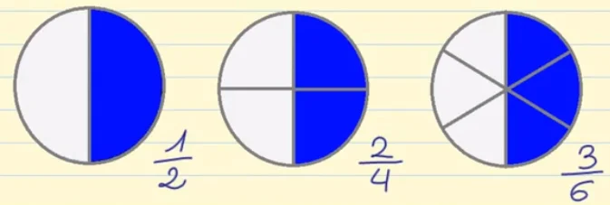
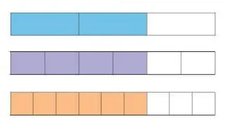

Unidad 0 - Fracciones
Amplificación y simplificación

Objetivo
Aplicar la amplificación y simplificación de fracciones a situaciones de la vida cotidiana.
Amplificar
Es encontrar una fracción equivalente con una mayor cantidad de divisiones.

¿Cuál es la representación en fracción de las siguientes divisiones de una unidad?

En su cuardeno, amplifica las siguientes fracciones en los factores de 2, 3 y 5
Ejemplo
- $\frac{1}{3} = \frac{1 \times 2}{3 \times 2} = \frac{2}{6}$
- $\frac{1}{3} = \frac{1 \times 3}{3 \times 3} = \frac{3}{9}$
- $\frac{1}{3} = \frac{1 \times 5}{3 \times 5} = \frac{5}{15}$
Ahora estos
- $\frac{2}{3}$
- $\frac{4}{5}$
- $\frac{5}{2}$
Simplificar
Es encontrar una fracción equivalente con una menor cantidad de divisiones.
¿De qué otra manera podemos agrupar estas divisiones?
$\dfrac{6}{8} = \dfrac{3}{4}$